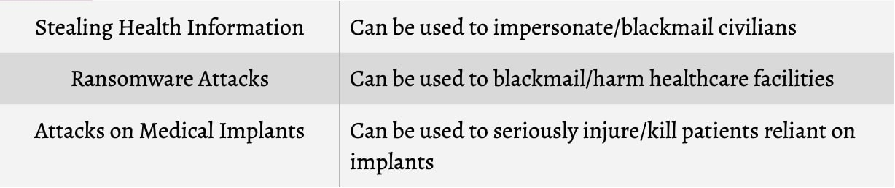

For our project we are going to be looking into the issue of
cybersecurity in healthcare.
With the advancement of electronic healthcare technology, utility for technological integration with healthcare services brings with it an emerging potential to improve clinical functionality and outcomes across the globe. However, healthcare is an appealing target for cybercrime, particularly because it has a plethora of valuable data and its defenses are weak. The havoc cybersecurity vulnerabilities could expose the healthcare industry to include, but are not limited to:

All of these possibilities serve to weaken patient trust, cripple healthcare systems, and severely injure or kill patients, and the threats are real. This indicates that system security, especially in the healthcare sector, is increasingly critical, yet legislation has historically remained lenient and unspecific.
Just in February 2025, the Cayuga Medical Center in NY suffered a
cyberattack which crippled their technological systems and forced
multiple patients to either have care delayed or be transferred to a
different facility. So it's important not only to deal with these
issues, but inform the public and US Legislature of these issues so
that they will not be repeated.
The goal of our website is to not only relay the criticality of the issue to uninformed citizens, but to use wider understanding of the subject to pressure lawmakers into establishing sound and effective legislation to prevent cybersecurity catastrophes.
Below is a simulation to represent the challenges currently faced by cybersecurity professionals in the healthcare industry.
Below is an additional resource for learning about the purposes and intentions behind this website.
Either you can
go to our sources page or view the below document for a more detailed breakdown of our research.